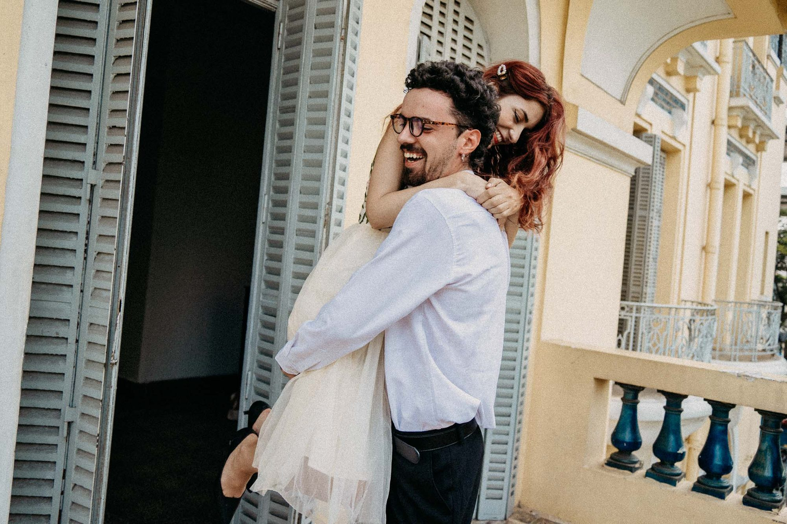
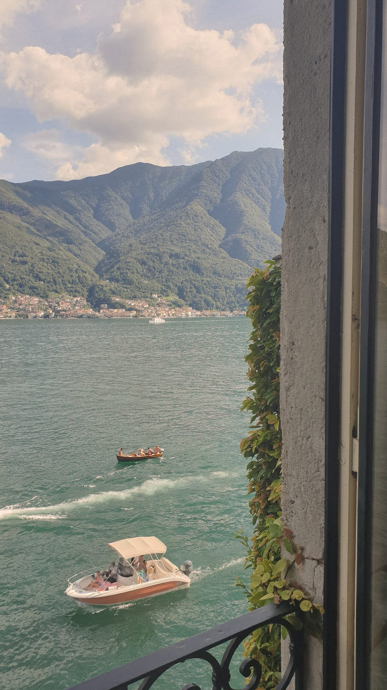

You shine bright. I capture it.
Bookings open for 2026 & 2027
You shine bright. I capture it.


„Antonia hat ein wahnsinnig talentiertes und gut geschultes Auge für Details. Mit ihrer empathischen Art hat sie wirklich die Essenz unserer Hochzeit festgehalten."
J & J, Bad Tölz